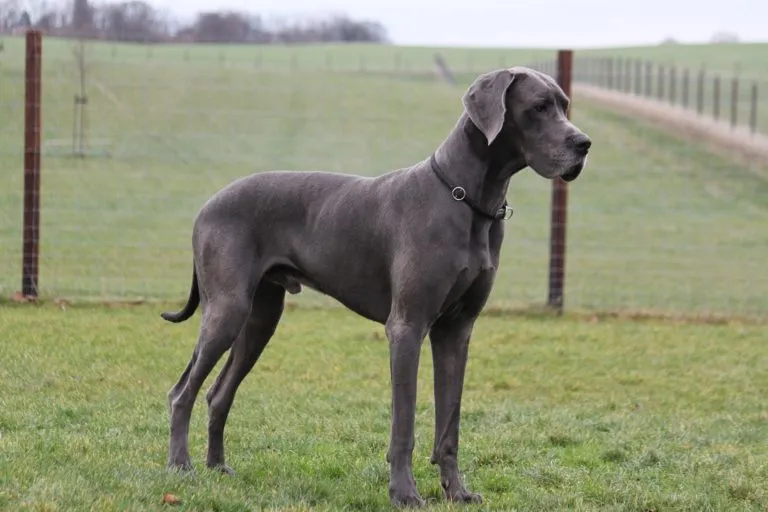

Presentación

El Gran Danés, conocido como el "Apolo de los perros", es una raza de tamaño gigante que combina una apariencia imponente y aristocrática con una gran fuerza y elegancia. Posee un cuerpo musculoso y bien proporcionado, con un pelaje corto, espeso y brillante que puede presentarse en colores como leonado, atigrado, azul, negro o arlequín. Su gran altura y su cabeza larga y expresiva lo convierten en uno de los perros más nobles del mundo canino.
Personalidad
A pesar de su tamaño intimidante, los Gran Danés son perros gentiles, cariñosos y muy dulces, razón por la cual se les llama "gigantes amables". Son extremadamente leales a sus familias y suelen llevarse muy bien con los niños, mostrando mucha paciencia. Son perros tranquilos en el hogar, pero requieren compañía humana constante, ya que no disfrutan de la soledad y buscan siempre el afecto de sus dueños.
Origen
Aunque su nombre sugiere un origen danés, la raza se desarrolló principalmente en Alemania, donde se utilizaba originalmente para la caza mayor de jabalíes y como guardián de fincas señoriales. Sus ancestros incluyen mastines y lebreles, lo que explica su mezcla única de potencia y velocidad. Con el tiempo, pasó de ser un perro de caza feroz a convertirse en el compañero refinado y protector que conocemos hoy.
Salud
Debido a su tamaño gigante, el Gran Danés tiene una esperanza de vida corta, generalmente entre 7 y 10 años. Son propensos a problemas de salud típicos de razas grandes, siendo la torsión gástrica el riesgo más grave, además de la displasia de cadera y enfermedades cardíacas como la cardiomiopatía. Es vital realizar chequeos cardiológicos regulares y cuidar mucho su crecimiento durante los primeros años de vida.
Aseo
Su pelaje corto es muy fácil de mantener y requiere un cepillado regular para eliminar el pelo muerto, especialmente durante las épocas de muda. No necesitan baños muy frecuentes debido a su gran tamaño, pero es fundamental mantener la higiene de sus uñas, que deben recortarse a menudo para evitar problemas al caminar. También es importante limpiar sus orejas y cuidar su higiene dental para prevenir infecciones y sarro.
Nutrición
La nutrición es crítica en el Gran Danés, especialmente durante su etapa de cachorro, para evitar un crecimiento demasiado rápido que dañe sus huesos. Necesitan una dieta de alta calidad formulada para razas gigantes, con raciones controladas en varias tomas al día para prevenir la torsión de estómago. Se debe evitar el ejercicio intenso antes y después de comer y asegurar siempre que tengan acceso a agua fresca.